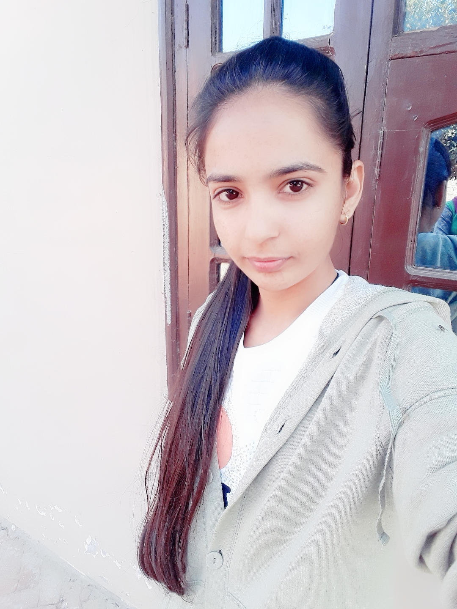
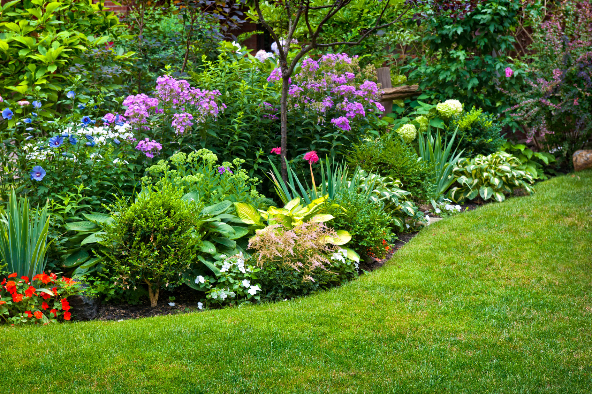

About Me
Student
My full Name is Amandeep kaur. I am from Punjab India.
Now living in Canada. I have completed
BCA from Fateh group of
institutions, Rampura phul , affiliated by Punjabi University patiala
. Now I am pursuing my career in Lambton College in Toronto.
My area of study is Mobile Applications Design and Development.
Dream of my life is to become Ios application developer.
my hobbies are reading books , playing VolleyBall and Gardening.
Which gives me relaxation and refresh my mind.
Reading Books:-
Reading frequently does actually make you smarter. Not only does it help you retain knowledge,
but it helps you to remember that knowledge later on in life. Whether or not you realize it,
Reading stockpiles your brain with new information, and you never know when it may come in handy.
VolleyBall:-
Volleyball is a team sport in which two teams of six players are separated by a net.
Each team tries to score points by grounding a ball on the other team's court under organized rules.
It has been a part of the official program of the Summer Olympic Games since Tokyo 1964.
I am National level Player of VolleyBall.

Gardening
Gardening is my hobby. It brings me in touch with the green plants and flowers and filled my lungs with pure Oxygen.
The great pleasure we get from planting, growing flowers and some vegetables of the season is not comparable with any other feelings.
Gardening as a hobby is more than recreational, it has everlasting benefits.
Gardening rejuvenates our minds.